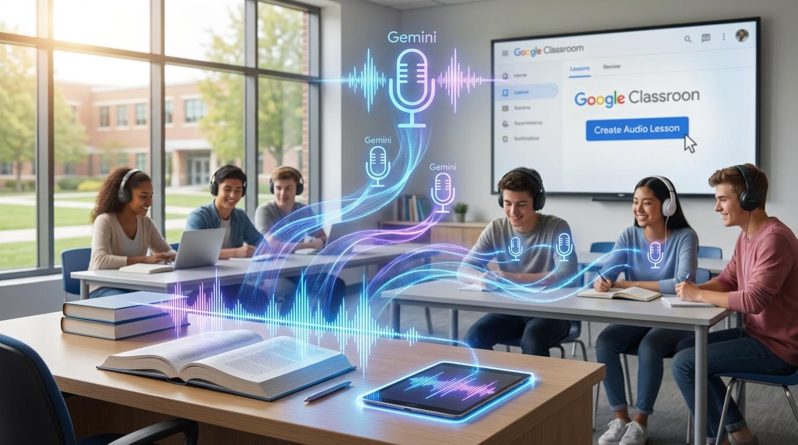

{kind=link}

Dosud jsme se při používání umělé inteligence ve škole často soustředili na to, jak správně napsat prompt. Učili jsme se formulovat zadání, zpřesňovat otázky a kontrolovat vygenerované odpovědi.
S rozvojem živé hlasové AI se ale otevírá další možnost. Student nemusí pouze zadávat otázky a číst odpovědi. Může vést rozhovor, vysvětlovat, argumentovat, reagovat na nečekanou otázku a postupně hledat správná slova.
Právě v tom může být pro vzdělávání jeden z nejzajímavějších přínosů nové generace hlasových modelů.
Od hlasového ovládání ke skutečnému rozhovoru
Starší hlasové systémy často fungovaly jako střídání oddělených kroků:
Při přirozeném rozhovoru to ale funguje jinak. Člověk může zaváhat, uprostřed věty se opravit, požádat o zopakování, změnit původní otázku nebo potřebovat několik sekund na rozmyšlenou. Právě k takovému způsobu komunikace se současné hlasové modely přibližují.
Nejdůležitější proto není samotný název modelu. Důležité je, že se AI může stát přirozenějším partnerem pro komunikaci.
Proč je to pedagogicky zajímavé?
Při klasické práci s chatbotem je snadné sklouznout k situaci, kdy student zadá otázku a AI za něj vykoná většinu práce. Při dobře navržené hlasové aktivitě se tento vztah může obrátit.
AI může být tím, kdo se ptá. Student je tím, kdo musí odpovídat, přemýšlet a formulovat vlastní vysvětlení.
To už není pouhé získávání hotových odpovědí. Je to aktivní procvičování. A nejde jen o výuku cizích jazyků.
1. Cizí jazyky: AI jako konverzační partner
Studenti mohou vést rozhovor s AI, která představuje například personalistu, zákazníka v obchodě, recepčního v hotelu, turistu nebo účastníka pracovní schůzky.
Výhodou je možnost nastavit jazykovou úroveň a konkrétní komunikační situaci. Student na úrovni A1 potřebuje krátké otázky a jednoduchou slovní zásobu. Pokročilejší student může reagovat na námitky, vysvětlovat rozhodnutí nebo argumentovat.
Příklad: pracovní pohovor
Student se uchází o místo ve strojírenské firmě. AI vystupuje jako personalista a ptá se například:
- Tell me something about yourself.
- Why do you want this job?
- What machines can you work with?
- What would you do if you didn't understand an instruction?
Cílem není dokonalá angličtina. Cílem je, aby student dokázal reagovat, požádat o zopakování a pokračovat, i když nezná všechna slovíčka.
Velmi důležitá je schopnost AI nechat studenta domluvit. Pro začátečníka může být několik sekund ticha přirozenou součástí hledání správné formulace. Nemělo by automaticky znamenat konec odpovědi.
2. Odborné vzdělávání: AI jako zákazník nebo kolega
U odborných škol se otevírají další možnosti. Žáci se neučí pouze odborné znalosti a praktické dovednosti. Musí se také naučit komunikovat se zákazníkem, spolupracovníkem nebo nadřízeným. Právě tyto situace lze pomocí hlasové AI simulovat.
Automechanik: zákazník neumí popsat závadu
AI představuje zákazníka, který přijel do servisu. Řekne například:
„Auto mi poslední dobou nějak divně hučí.“
Úkolem studenta není okamžitě určit závadu. Musí se správně doptat:
- Kdy se zvuk objevuje?
- Při jaké rychlosti?
- Při zatáčení nebo při jízdě rovně?
- Jak dlouho problém trvá?
- Zaznamenal zákazník ještě něco dalšího?
Student si procvičuje jednu z důležitých profesních schopností: získat potřebné informace dříve, než začne navrhovat řešení.
Elektrikář: zákazník nezná technické možnosti
AI představuje zákazníka, který chce například rozšířit elektroinstalaci. Student musí zjistit požadavky, srozumitelně komunikovat a rozpoznat chybějící informace.
AI nemá rozhodovat o bezpečnosti konkrétní instalace ani nahrazovat odborného učitele. Jde o trénink komunikace, nikoliv autorizované technické posouzení.
Obráběč: neúplné pracovní zadání
AI hraje kolegu, který předává pracovní úkol, ale neuvede všechny potřebné údaje. Student se musí doptat na materiál, rozměry, toleranci nebo další okolnosti podle úrovně učiva.
Správným výsledkem aktivity není rychlá odpověď, ale schopnost poznat, že dosud nemáme dost informací.
3. Občanská nauka: rozhovor s člověkem jiného názoru
Živá hlasová AI může pomoci rozvíjet argumentaci, například při tématu školních pravidel.
Student dostane otázku: Měly by být mobilní telefony během vyučování odložené?
AI vystupuje jako účastník diskuse, který klade věcné otázky a přináší protiargumenty. Může se zeptat:
- Jak by tvoje pravidlo fungovalo v praxi?
- Co bys řekl člověku, který nesouhlasí?
- Existuje situace, kdy by měla platit výjimka?
Cílem není přimět studenta k určitému názoru. Cílem je formulovat důvody, reagovat na nesouhlas a případně vlastní stanovisko upřesnit.
4. Ekonomika: vyjednávání se zákazníkem
AI může představovat zákazníka s omezeným rozpočtem. Student má nabídnout výrobek nebo službu, zjistit potřeby a vysvětlit možnosti. Zákazník během rozhovoru například změní požadavky nebo požádá o slevu. Student musí reagovat.
Procvičuje tím:
- obchodní komunikaci;
- aktivní naslouchání;
- vyjednávání;
- práci s rozpočtem;
- vysvětlování podmínek.
Pokud se pracuje s cenou, procenty nebo rozpočtem, musí student následně ověřit také správnost výpočtů.
5. Přírodovědné a technické předměty: vysvětli mi to
AI nemusí být odborník, který studentovi vysvětluje učivo. Může představovat člověka, který mu nerozumí.
Student dostane například úkol:
„Vysvětli mi, proč v elektrickém obvodu teče proud.“
AI se doptává:
- Proč je k tomu potřeba napětí?
- Co se stane, když obvod přerušíme?
- Můžeš mi to vysvětlit na jednoduchém příkladu?
Podobně lze postupovat u fyziky, chemie, biologie nebo dalších technických předmětů. Schopnost vysvětlit pojem vlastními slovy může odhalit, zda student skutečně rozumí souvislostem, nebo si pouze zapamatoval definici.
6. Český jazyk: příprava na ústní projev
Hlasová AI může pomoci při přípravě prezentací a ústního zkoušení. Student například vlastními slovy představí knihu, literární postavu nebo přečtený text.
AI se doptává na děj, motivaci postav a studentovu interpretaci. Student tak trénuje souvislý projev a schopnost reagovat na otázku, kterou nemá předem připravenou.
AI může nabídnout zpětnou vazbu, ale neměla by být jedinou autoritou pro známkování.
7. Třídnické hodiny: nácvik obtížné komunikace
Další možností je simulace běžných mezilidských situací. Například:
- slušně odmítnout nevhodný požadavek;
- požádat o pomoc;
- vysvětlit nedorozumění;
- sdělit nesouhlas;
- domluvit spolupráci.
AI představuje druhou stranu rozhovoru a student si může bezpečně vyzkoušet různé formulace.
Používejte smyšlené situace, nikoli skutečné konflikty konkrétních žáků nebo jejich citlivé osobní informace. Živá hlasová AI není náhradou školního poradenského pracoviště ani řešením krizových situací.
Jak může vypadat desetiminutová aktivita?
Učitel nemusí hned připravovat celou hodinu s AI. Pro první vyzkoušení stačí deset minut.
Příklad: pracovní pohovor v angličtině
- 2 minuty – příprava. Student si připraví slovní zásobu a promyslí, co chce říct.
- 4 minuty – živý rozhovor. AI hraje personalistu, ptá se vždy jen jednou otázkou a nechává prostor na odpověď.
- 2 minuty – vlastní reflexe. Student zapíše, které otázce rozuměl, u které potřeboval pomoc a co nedokázal vyjádřit.
- 2 minuty – zpětná vazba. Učitel vybere jednu věc, kterou student zvládl, a jednu, na které může dál pracovat.
Nemusí hodnotit každou jazykovou chybu. Podstatná je aktivní komunikace.
Jak AI správně zadat roli?
U hlasových aktivit je vhodné nastavit AI přesněji než při běžném rozhovoru. Nestačí napsat: „Procvičuj se mnou angličtinu.“ Lepší je určit roli, cíl, jazykovou úroveň a pravidla komunikace.
Univerzální prompt pro živou hlasovou výuku
Tvým úkolem není podat hotový výklad ani za studenta vyřešit úkol.
Hraj určenou roli a reaguj přirozeně na jeho odpovědi.
Ptej se vždy pouze na jednu věc.
Nech studentovi čas na rozmyšlenou. Nepřerušuj ho jen proto, že hledá správná slova.
Pokud si neví rady, nabídni malou nápovědu.
Neposkytuj hotové řešení, pokud to není součástí zadání učitele.
Po skončení rozhovoru poskytni krátkou zpětnou vazbu:
- co student vysvětlil srozumitelně;
- kde mu chyběla informace;
- jakou jednu věc může příště zlepšit.
Nevystavuj známku.
KONEC PROMPTU.
Tento základ lze doplnit například o roli:
- zákazníka autoservisu;
- personalisty ve strojírenské firmě;
- člověka, který nerozumí elektrickému obvodu;
- účastníka věcné diskuse.
Pokud hledáte další obecné šablony pro práci s AI ve výuce, můžete navázat také na 7 univerzálních promptů pro učitele.
Praktická omezení: co je potřeba ověřit před hodinou
Nové hlasové modely neznamenají, že má každý student automaticky přístup ke všem předváděným funkcím. Je potřeba rozlišovat mezi modelem dostupným vývojářům přes API a hlasovou funkcí v běžné aplikaci.
Například Gemini Live v mobilní aplikaci a Gemini Live API nejsou dvě označení téže dostupnosti: první je uživatelská funkce s vlastními podmínkami, druhé je vývojářské rozhraní pro tvorbu obousměrných hlasových aplikací. Dostupnost se může měnit podle zařízení, účtu, země, jazyka a nastavení organizace.
Před hodinou ověřte:
- dostupnost hlasové funkce na zařízení;
- přístup pro školní účet;
- věkové podmínky;
- nakládání s hlasovými daty;
- případné požadavky na kameru nebo obrazovku.
Při sdílení obrazovky mohou být zpřístupněny také informace, které učitel nechtěl poskytnout. Na obrazovce proto nemají být otevřené školní systémy s osobními údaji.
A nezapomínejme na praktickou věc: třicet studentů, kteří současně vedou hlasový rozhovor s AI, vytvoří velmi hlučnou učebnu. Pro první pokus může být vhodnější jeden společný rozhovor na učitelském zařízení, práce ve dvojicích nebo střídání studentů.
Co může vzniknout pro vlastní vzdělávací aplikace?
Živá hlasová AI otevírá možnost vytvářet specializované hlasové simulátory. Například:
- AI personalista – trénink pracovního pohovoru;
- AI zákazník – odborná komunikace;
- AI oponent – věcná argumentace;
- AI spolužák – vysvětlování odborného pojmu;
- AI jazykový partner – pravidelné mluvení podle jazykové úrovně.
Taková aplikace nemusí být pouze formulářem, do kterého student nahraje odpověď a čeká na hodnocení. Může se stát prostředím, ve kterém probíhá skutečný dialog.
Při tvorbě podobné aplikace je však důležité promyslet ukládání dat, délku rozhovoru, provozní náklady a přístup nezletilých.
Nejdůležitější pravidlo: AI mluví méně, student mluví více
S příchodem schopnějších hlasových modelů může být lákavé vytvářet aplikace, které studentům všechno vysvětlí a odvyprávějí. To by ale byla promarněná příležitost.
Největší pedagogický přínos živé hlasové AI může být přesně opačný: přimět studenta, aby sám mluvil, vysvětloval, argumentoval a reagoval.
V cizím jazyce. V odborné komunikaci. Při občanské diskusi. Při obhajobě vlastního řešení.
Dosud jsme se často učili, jak správně položit AI otázku. S živou hlasovou AI se můžeme začít učit také, jak vést rozhovor, jak naslouchat a jak vlastní myšlenky vyjádřit tak, aby jim druhý porozuměl.
A to je dovednost, kterou studenti budou potřebovat bez ohledu na schopnosti budoucích modelů.
Ověřené podklady a další čtení
Konkrétní dostupnost hlasových funkcí se mění podle služby a účtu. Před hodinou proto vždy ověřte aktuální podmínky přímo u poskytovatele: